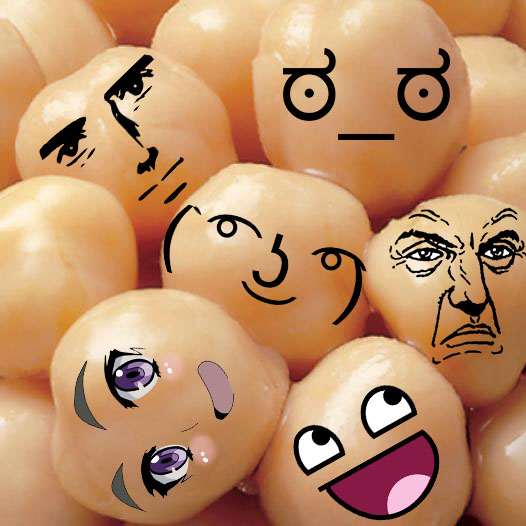

Chickpeas are a type of legume commonly used in middle-eastern cooking. They are used to make falafel and hummus, but may also be used in anything from salads to stews. they can also be ground into a powder and used as as a seasoning.
There are many differnt types of chickpeas, but one that is perhaps the least known are chickpeas with faces. These rarely-found chickpeas are very slow-growing, so much so that less than 10 beans make it to maturity per year.
The faces found on these chickpeas continue to perplex scientists, as the faces on them tend to look like the latest dank memes. As the chickpeas have not achived sentience, the faces on them do not change even after they are picked. They are stuck like that forever, just like your mother warned you about.